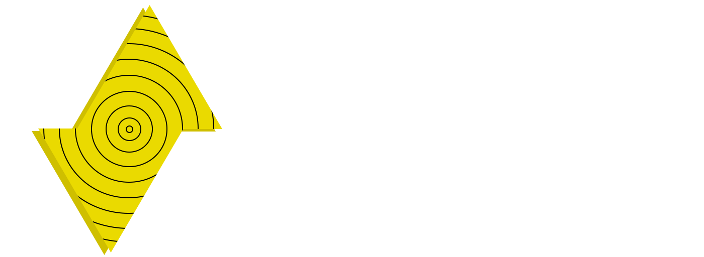

Share your music. Share your world.
Our music says a lot about us. We each create our own worlds in our minds when our favorite song comes up on shuffle. It's a place in our minds that only we can visit. But what if you could share it with other people? Just a few friends? Some complete strangers? The whole world perhaps? Sounds like a dream. But Spark makes it a reality. Not only that, Spark makes it easy and free.
Spark gives you easy access to YouTube and SoundCloud. If you've got a paid Google Play Music account, you can use that too. Finally, you can also use direct URLs and Dropbox links (MP3 Only) if that's what floats your musical boat.
Features
In addition to sharing music from YouTube, SoundCloud, Google Play Music, and Dropbox, you can also send in direct MP3 URLs (HTTP, HTTPS, and FTP all accepted!) to the scene and share any songs you've got stored in that personal Debian server of yours. It's not Debian? It should be. Use Debian. Moving on.
Each time a song is queued, lyrics are automatically looked up on Genius (or AZLyrics, your choice!) and then sent to your screen for your reading pleasure.
If you're a person who likes to listen with the doors locked, that works too. You can completely lock your room away from the rest of the world with a password. Nobody is getting in without it.
Q&A
I'm a developer and I want to interact with your app!
Congrats! You can do that! Just do some reading.
Is this even legal?
Yes, actually. YouTube and SoundCloud hit a touchy spot - since their files are saved as temporary files. But Google Play Music requires a paid GPM account, and only relies on the livestream URL.
So I just need an account for Google Play Music?
Yes, that's correct. YouTube and SoundCloud use client IDs and public APIs for their streams, so there's no reason to ask you for authentication.
What platforms does Spark run on?
Spark is very cross-platform. We support Windows, Mac, and Linux. And they all work the same across all platforms. You can thank me later.
Do you have any plans for a mobile app?
No.
...Can I make the mobile app?
Sure, but I won't be endorsing it.